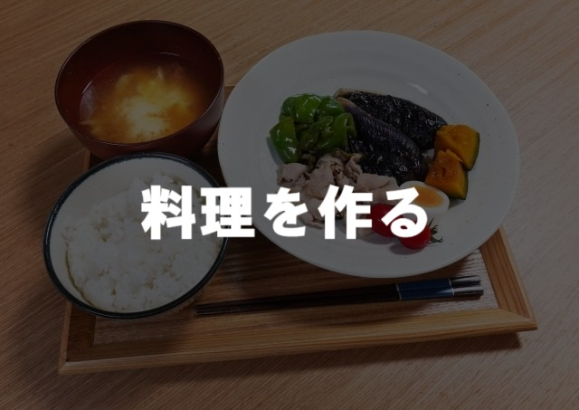
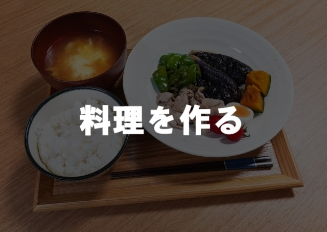

料理を作る
時間があり、炭水化物量、タンパク質量、材料など細かいところまでこだわりたい人におすすめ！
コンビニで買う
忙しく、食事を簡単に、だけどカロリーくらいはこだわりたい人におすすめ！
"コンビニで買う"ページでは、カート内に追加した商品について足りない栄養素があった場合にはそれが表示されます。足りなかった栄養素をもとに料理を作っていただければ栄養のバランスがとても良くなると思います。
時間があり、炭水化物量、タンパク質量、材料など細かいところまでこだわりたい人におすすめ！
忙しく、食事を簡単に、だけどカロリーくらいはこだわりたい人におすすめ！
"コンビニで買う"ページでは、カート内に追加した商品について足りない栄養素があった場合にはそれが表示されます。足りなかった栄養素をもとに料理を作っていただければ栄養のバランスがとても良くなると思います。